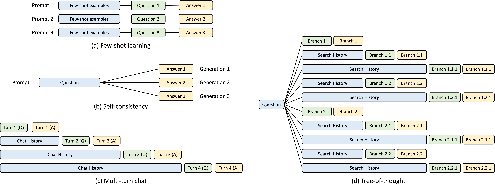
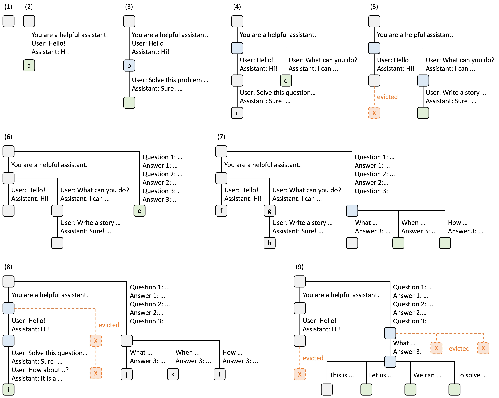
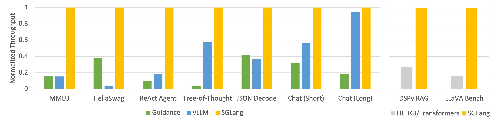

00全景与读法
RadixAttention 把 KV cache 组织成一棵基数树（radix tree），对每个新请求做前缀匹配，命中就复用已算的 KV、不重算。它自动、动态地从真实流量里发现可共享的前缀（零配置），用 LRU 淘汰、用 cache-aware scheduling 调度请求以最大化命中，并能优雅处理对话分叉（fork）。对比 vLLM 的 PagedAttention（解决显存碎片 + 精确前缀哈希复用），RadixAttention 在多轮、agent、RAG、共享 system prompt、树搜索这些"前缀重度"场景上优势最大——prefix-heavy 下可比 vLLM 快约 29%～6×（第三方/媒体口径，provisional）。对 RL 的意义：GRPO 一个 prompt 采 N 条样本，它们共享同一前缀，RadixAttention 直接复用，这是 rollout 引擎最直接的节省方式；移植到昇腾的 SGLang-Ascend 后，同样能缓解 910B 的 rollout 显存。
本篇是单系统精读，每一节固定三段：朴素基线（左栏，灰：不看论文的直觉实现）/ 它的做法（右栏，橙：RadixAttention 的实际设计）/ 差在哪（下方色块：差异、原文是否给了理由、对 RL-on-NPU 的含义）。数字按来源分三类标注：第三方 独立测量或多方一致、自报 SGLang 团队口径、推断 本站分析。原文所有性能数字均标 provisional（第三方/媒体口径，非实测），本文全程保留。
一条贯穿全文的线索：RadixAttention 的收益不是模型或硬件的属性，而是工作负载结构的函数——收益随"前缀共享度 × N × 前缀长度"放大，前缀不共享时归零。理解这一点，就能同时理解它为什么在 GRPO rollout 上特别有价值，以及为什么不能把任何加速比当作通用承诺。
01问题：前缀被反复重算
LLM 推理里，很多请求共享前缀：同一套 system prompt、同一段 few-shot、多轮对话的历史、RAG 里相同的文档、agent 群里相同的工具说明。朴素做法对每个新请求都从头计算一遍这些前缀的 KV——属于纯粹的重复开销。节省方式就是前缀缓存（prefix caching）：保留已计算的 KV，前缀相同就复用。难点在于如何高效地"发现 + 匹配 + 淘汰"任意的共享前缀。

这张图怎么读
看蓝色块的形状而不是数量。(a) 中蓝色块在三条 prompt 里长度相同、位置相同——这是最简单的"线性单链共享"，精确哈希也能处理。(c) 中蓝色块逐轮加长，第 4 轮的 Chat History 包含前三轮全部内容——这是原文第 03 节多轮示例的图示，命中前缀随轮数单调增长。(b) 与 (d) 的蓝色块则是分叉的根：一个 Question 派生多个输出，(d) 更进一步在每层分叉后又形成新的共享段（Search History）。
(b) Self-consistency 就是 GRPO group rollout 的结构：一个 prompt 采 N 条样本，N 条共享 Question 这段 KV。(d) 则对应原文所说的树搜索与 agent 探索。四张子图合看，原文"难点在于如何高效地发现 + 匹配 + 淘汰任意共享前缀"里的"任意"指的就是这四种形态并存、且事先不知道哪种会出现——这是选择树结构而非哈希表的动机（第 04 节）。
朴素基线
每个请求独立 prefill：把完整 prompt（含 system prompt、历史、文档）从头算一遍 KV，请求之间不共享任何中间结果。实现最简单，但 system prompt 与多轮历史的 KV 被反复重算。
它的做法
前缀缓存：保留已计算的 KV，前缀相同就复用。但原文强调这只是方向——真正的设计问题是"发现 + 匹配 + 淘汰"三个动作如何对任意共享前缀高效完成，而不是给某一段固定文本手工加缓存。
差在哪基线的浪费是确定性的：图 1 四类模式中蓝色块的 KV 每次都重算。原文把问题定义为"任意前缀"的发现、匹配、淘汰，这一定义排除了"只缓存 system prompt"这类手工方案——因为多轮历史、RAG 文档、树搜索分支都是运行时才出现的前缀，事先无法声明。对 RL rollout，GRPO 的 group 结构（图 1b）是可预知的共享，但 agent 多轮（图 1c/d）不是，因此需要通用机制。
02基数树：结构与匹配
核心是一棵基数树（radix tree，压缩前缀字典树）。节点 = 一段 token 序列 → 它的 KV，从根到某节点的路径就是一个被缓存的前缀。新请求来 → 沿树做最长前缀匹配：匹配到的部分直接复用 KV，只对剩下的新 token 算注意力。自动 / 动态发现：不需要预先声明"哪些前缀会复用"，树会自然捕捉真实流量里实际存在的共享，零配置。LRU 淘汰：显存不够时，按最近最少使用从树上驱逐叶子。Cache-aware scheduling：调度器有意把"能命中缓存"的请求排在一起，把命中率最大化（这是与仅添加一层缓存的关键区别）。优雅处理 fork：对话/推理分叉时，多个分支共享公共前缀，各自只算分叉后的部分——非常适合 best-of-N、树搜索、agent 探索。概括而言：它把"前缀复用"从"精确字符串命中"升级为"一棵自组织的树 + 协同配合的调度器"。

这张图怎么读
关键是三条虚线的顺序：新请求 → 根（开始匹配）→ A（命中 root + A，复用）→ A2（只算尾部）。匹配深度决定复用量：这个请求走到 A 就停，因为它的尾部与 A1、A2 都不同——于是它成为 A 的新分叉。若它与 A2 完全相同，匹配会继续到 A2、复用量更大。
再看"从根到某节点的路径 = 一个被缓存前缀"这条解释性标注：它说明树上没有独立存储的"完整前缀"，每个节点只存自己那一段 token 的 KV，完整前缀由路径拼出。这就是 A1、A2 能共享 root + A 而各自只多存一小段的原因——也是图 3（原图）中"evicted"只发生在叶子的结构基础。

这张图怎么读
按编号顺序看，这张图是原文第 02 节六条要点的动态版本。(2)→(3)→(4) 演示"自动发现"：(2) 时整条对话是一个节点；(4) 时另一个会话到来，只有"You are a helpful assistant."这段与之相同，树自动在这一点切开、生成蓝色分叉节点——没有任何人声明过"system prompt 要缓存"，共享是由第二个请求的到来触发的。
(5)、(8)、(9) 演示 LRU 从叶子驱逐：所有橙色 X 都出现在叶子位置，从未出现在蓝色分叉节点或根上。这对应原文的两条理由——叶子共享度最低，且删中间节点会切断子树路径。注意 (9) 中被驱逐的是 (7) 时创建的 When / How 分支，而更早的"User: Hello!"链路在 (8) 也被驱逐了——驱逐顺序按最近最少使用，与节点年龄无关。
(6)→(7)→(9) 演示 fork 的一等支持：(6) 的 few-shot 前缀（Question 1–3 与 Answer 1–2）是一段很长的公共前缀，(7) 在 Question 3 之后派生三个分支，(9) 再在其中一个分支下派生四路。这正是图 1(d) Tree-of-thought 与 GRPO group rollout 的形态——长公共前缀只在树上存一份，每个分支只多存自己那段绿色节点。这张图说明了原文"非常适合 best-of-N、树搜索、agent 探索"的结构原因。
朴素基线
给固定文本（如 system prompt）加一层缓存：以整段文本的哈希为键、KV 为值。要求事先知道哪段会被复用；分叉与多轮历史需要为每种前缀组合单独建键，键数随组合数爆炸。
它的做法
基数树：节点存一段 token 的 KV，路径拼出完整前缀；最长前缀匹配是树的原生操作，匹配粒度精确到 token；分叉即节点派生子节点，公共前缀物理上只存一份；LRU 只驱逐叶子。零配置，共享由流量本身塑形（图 3）。
差在哪基线把"哪些前缀会共享"的判断交给使用者，树把它交给数据结构。原文给出的理由是结构性的：路径即前缀使得任何两个请求的公共前缀都自动成为它们在树上的公共路径，不需要枚举组合。原文还强调调度器与树"协同配合"是与"仅添加一层缓存"的关键区别——即命中率不只取决于树能否表达共享，还取决于请求到达时共享前缀是否仍在树上（第 04 节）。
03处理流程与多轮示例
每个新请求的处理流程是：匹配 → 复用 → 只算尾部 → 挂回树 → 必要时 LRU 淘汰。原文以一个带工具调用的 agent 多轮会话为例：system prompt 固定，每轮在已有上下文后追加用户输入、工具返回、模型回复。关键事实是——每一轮请求都把"之前全部对话"当作前缀重新发给引擎，这正是 prefill 开销最集中的环节。

这张图怎么读
两个菱形判定是流程的全部分支点。第一个（是否命中）决定 prefill 量：命中与否两条路最终都汇入"只对新增尾部算注意力"——未命中的情形只是"尾部 = 全部"的特例，流程不需要为无缓存请求另开一条路径。第二个（显存是否充足）决定是否触发 LRU，它发生在写回树之后，即新 KV 总是先入树、再决定驱逐谁。
值得注意的是"把新算的 KV 作为新节点挂回树上"这一步对所有请求无条件执行：每个请求既是消费者也是生产者，树的内容完全由流量决定——这是"零配置、自动发现"的流程根源。对 RL rollout 而言，这意味着 GRPO 的第一条样本 prefill 完 prompt 后，其余 N−1 条到达时已能命中。
| 轮次 | 本轮请求的完整前缀 | 新增 token | 命中前缀长度 | 需要 prefill 的 token |
|---|---|---|---|---|
| 第 1 轮 | system(400) + Q1(50) | 450 | 0（冷启动） | 450 |
| 第 2 轮 | …上文 + A1(120) + Q2(40) | 160 | 450 | 160 |
| 第 3 轮 | …上文 + A2(200，含工具调用) + tool_result(300) + Q3(30) | 530 | 610 | 530 |
| 第 4 轮 | …上文 + A3(150) + Q4(60) | 210 | 1140 | 210 |
朴素基线
第 4 轮请求携带全部 1350 token 上下文到达，引擎从头 prefill 1350 token；前三轮已算过的 1140 token 全部重算。会话每加一轮，prefill 成本随累计上下文线性增长。
它的做法
第 2 轮前 450 token 与上一轮逐 token 相同，一路匹配到该节点，这 450 token 的 KV 直接复用、prefill 完全跳过，只对新增 160 token 算注意力；第 3、4 轮在命中节点处继续延长树。第 4 轮只算 210 token，节省约 84%。整个过程零配置。
差在哪原文的结论：会话越长，尾部新增占比越小，节省越多——这就是"长多轮 / 长 agent 循环"是 RadixAttention 优势场景的原因。示例中的 token 数为示意值，84% 是按示意值算出的比例而非实测，引用时应注明。对 D08 所述 10–100+ 回合的 agentic RL rollout，这一节省沿回合数放大，是长 rollout 显存与时延问题的直接对症。
04树而非哈希、LRU 从叶子、cache-aware 调度
选择树而非哈希表的原因。vLLM 的 APC 用 block 级精确哈希：把前缀切成定长 block，对每个 block 前缀算哈希，命中就复用。这对"线性单链前缀"够用，但难以处理分叉。RadixAttention 选基数树的核心理由有二：① 最长前缀匹配是树的原生操作——新请求沿树向下匹配至无法继续为止，天然得到"最长可复用前缀"，无需预设 block 边界，匹配粒度精确到 token；② 分叉（fork）获得一等支持——一个 prompt 派生 N 条续写（beam search、并行采样、agent 多分支），共享公共前缀、在某点分叉，在树中即为一个节点派生多个子节点，公共前缀 KV 物理上只存一份。哈希表难以自然表达"共享 + 分叉"，树结构则与之天然对应。
LRU 从叶子驱逐的原因。树的结构本身编码了"共享度"：越靠近根的节点被越多请求路径经过（system prompt 在根附近，几乎每个请求都命中），越靠近叶子越是某条具体会话的私有尾部。从叶子驱逐 = 优先移除共享度最低、最不可能再被命中的 KV，把根附近的高价值共享前缀尽量保留；而且只有叶子能被安全删除——删中间节点会切断其子树的路径完整性。

这张图怎么读
两侧的请求集合完全相同，只有顺序不同。左侧的失效来自 LRU 与到达顺序的交互：甲被乙隔开时，若显存紧张，甲的前缀可能在第二个甲到达前已被驱逐。右侧把甲排在一起，使第二个甲在第一个甲的 KV 生命周期内到达——原文称之为把命中从"偶发"变为"主动构造"。
这张图没有画出代价。原文明确指出：cache-aware 调度为提高命中会打乱到达顺序，可能使"前缀孤立"的请求排队变长、尾延迟变差——图中若有一个前缀丙的单独请求，它在右侧会被排到最后。公平性与命中率的取舍是需按 SLA 调节的参数，这一点在读图时应补上。
朴素基线
block 级精确哈希（vLLM APC 的方式）+ 按到达顺序调度 + 任意位置淘汰。线性单链前缀可以命中；分叉需为每条分支重复存公共前缀；淘汰不区分共享度；命中率取决于请求碰巧的到达顺序。
它的做法
树：最长前缀匹配为原生操作、粒度到 token、分叉一等支持。LRU：只从叶子驱逐，优先移除共享度最低的私有尾部，保留根附近高价值前缀，并保证子树路径完整。调度：按与当前树的匹配长度分组，把前缀相近的请求编排到一起，在共享 KV 生命周期内集中复用。
差在哪三处差异共同构成一个闭环：树让共享可表达，叶子驱逐让高价值共享留得久，调度让请求在留得久的窗口内到达。原文为每一处都给了结构性理由。但原文同样明确了三条边界：① 命中依赖前缀"真共享"——逐 token 比对而非语义相似，system prompt 改一个字、或在前缀靠前位置注入 per-request 的时间戳/用户 ID，后面全部 miss，把易变内容尽量后置是一种工程纪律；② cache 抖动——显存紧张 + 前缀高度分散时，新前缀不断驱逐旧前缀，命中率骤降，反而增加维护树和驱逐的开销；③ 公平性 vs 命中率的取舍。对 RL rollout，第 ① 条尤其重要：若 prompt 模板在靠前位置嵌入样本 ID 或随机种子，GRPO 组内共享将失效。
05vs PagedAttention：实为互补
原文的对照表：RadixAttention（SGLang）解决的核心是前缀复用（KV 共享），结构是基数树 + cache-aware 调度，前缀缓存为自动/动态发现任意前缀，强项场景是多轮 / agent / RAG / 共享 prompt / fork；PagedAttention（vLLM）解决的核心是显存碎片（分页管理 KV），结构是固定大小 KV 分页（类虚拟内存），前缀缓存为 APC 精确前缀哈希命中，强项场景是通用、可预测、可配置负载。注意：两者不是非此即彼——SGLang 也做分页式显存管理，vLLM 也有自动前缀缓存（APC）。真正的差异在 radix tree 的结构 + cache-aware 调度，让它在"复杂、不可预测的前缀复用"上更强。所以基准上：唯一 prompt 批任务两者趋同；prefix-heavy RAG 上 SGLang 可快到 6×。

这张图怎么读
两条链的第一个节点（"解决"）是读图关键：两者解决的是不同问题——一个管请求之间的 KV 去重，一个管单机内的显存分配。这就是为什么它们能汇入同一个 COMBO 节点：一份被多请求复用的 KV，同样需要分页存放。
底部的 PERF 分叉给出性能差异的条件：差异不是引擎属性而是负载属性。UNIQ（趋同）与 HEAVY（6×）之间的全部区间，由前缀共享度决定。因此比较两个引擎时若不注明负载结构，数字没有意义——这也是原文把所有数字标 provisional 的原因。
朴素基线
把 RadixAttention 与 PagedAttention 视为两种互斥的 KV 管理方案，选 SGLang 就放弃分页、选 vLLM 就没有前缀缓存；以单一加速比比较两者优劣。
它的做法
SGLang 同时做分页式显存管理与基数树前缀复用；vLLM 同时做分页与 APC 精确哈希前缀缓存。差异只在前缀复用的表达能力（树 vs 哈希）与调度是否 cache-aware。性能差异随负载：唯一 prompt 趋同，prefix-heavy 最高约 6×。
差在哪原文的定性是"实为互补"。本站判断：选型问题不是"树还是分页"，而是"负载有多少可复用前缀、分叉有多复杂"。对 RL rollout 引擎选型（D11 详述），GRPO group 与 agent 多轮都是 prefix-heavy 且含分叉的负载，落在 RadixAttention 的优势区间；但"6×"是 RAG 场景的峰值口径，不能直接搬到 rollout。
06对 RL / agent 特别重要的原因
这是本看板最关心的角度。GRPO/RLVR 的 rollout 天生前缀重度：一个 prompt 要采 N 条样本（group），它们共享完全相同的 prompt 前缀，RadixAttention 把这段前缀只算一次、N 条复用，直接降低 rollout 的显存和时延。树搜索 / best-of-N / 多轮 agent：fork 共享前缀，探索不同分支不重算——正是 agentic RL（D08）长 rollout 的成本节省点。agent 群共享 system/工具说明：几十个 agent 同一套 system prompt → 零成本共享。这也是 SGLang 成为许多 RL 栈首选 rollout 引擎（AReaL、Miles 等）、以及 RadixArk 能同时做推理 + RL 两端（D09）的原因。

这张图怎么读
这张图是图 1(b) Self-consistency 与图 3 第 (7)、(9) 步的 RL 版本：PROMPT 是蓝色分叉节点，S1…SN 是绿色叶子。N 条实线全部标注"fork 分支共享公共前缀"，说明 N 条样本在树上是同一节点的 N 个子节点，prompt 的 KV 物理上只有一份。
底部两级汇聚（BENEFIT → NPU）给出因果链的终点：省下的不只是 prefill 算力，还有 N−1 份 prompt KV 的显存。在 GPU 上这主要是时延收益；在无 sleep-mode 的 910B 上，rollout 峰值显存直接决定可用并发与 batch，因此显存收益的权重更高——这是原文把 NPU 单列为终点节点的原因。
朴素基线
GRPO 的 N 条样本作为 N 个独立请求提交给推理引擎，每条各自 prefill 完整 prompt，各自持有一份 prompt KV。N 越大，prompt 部分的重复计算与显存占用越多。
它的做法
N 条样本在树上共享 prompt 节点，prompt 只算一次、只存一份，每条只算并持有生成端 token 的 KV；prompt 部分理想节省约 (N−1)/N。多轮 agent 与树搜索的分支同理。
差在哪原文把 GRPO 组内共享称为"rollout 引擎最直接的节省方式"，本站同意，并指出这一收益的两个前提：N 条样本需在树上前缀仍存活的窗口内到达（cache-aware 调度保证），且 prompt 模板不得在靠前位置嵌入 per-sample 变量（第 04 节边界 ①）。原文所列 AReaL、Miles 采用 SGLang 为 rollout 引擎是生态事实，原文未给这些栈上的实测收益。
07效果 / 收益对比与边界（provisional）
原文的收益表数字均为 provisional（第三方 / 媒体口径，非本文实测），用于说明量级与趋势，不应当作通用加速比承诺。整体在 prefix-heavy 工作负载上，媒体口径约 29% 的端到端提升，RAG 这类前缀重场景峰值可达 6×。
| 场景 | 前缀复用收益（provisional） | 说明 |
|---|---|---|
| 唯一 prompt 批处理 | ≈ 无 / 趋同 | 各请求前缀互不相同，没有可复用前缀，SGLang 与 vLLM 表现趋同 |
| 共享 system prompt | 明显 | 大量请求共用同一段长 system prompt，根附近前缀被几乎所有请求命中，prefill 大幅省 |
| 多轮对话 / agent 循环 | 明显且随轮数放大 | 第 N 轮命中前 N−1 轮全部前缀，尾部新增占比越来越小 |
| RAG 长文档前缀 | 最高可达约 6× | 同一长文档/上下文作前缀被多 query 复用，前缀长、共享度高，是优势场景 |
| GRPO group rollout（N 条共享前缀） | 接近 prompt 部分省 (N−1)/N | 一个 prompt 采 N 条样本共享 prompt 前缀，prompt 的 KV 只算一次、N 条复用 |

这张图怎么读
不要读绝对倍数，读蓝色柱高度沿横轴的变化。vLLM 的相对吞吐在 Chat (Long) 最接近 1（约 0.95），在 Tree-of-Thought、Chat (Short) 约 0.55–0.6，在 MMLU、ReAct Agent 约 0.15–0.2，在 HellaSwag 最低（不足 0.05）。也就是说，同一对引擎在不同负载上的差距可以从几乎为零到超过一个数量级——这正是原文"数字强依赖工作负载结构，不是模型/硬件的固定属性"的直接图示。
与原文收益表对照时注意两点。第一，Chat (Long) 差距最小，与原文"多轮对话收益随轮数放大"表面相悖——但该基准测的是给定长上下文的单次生成而非逐轮复用，长上下文使 decode 而非 prefill 主导，前缀复用的空间被压缩；这提醒"多轮"收益要求逐轮请求真的经过同一引擎。第二，HellaSwag、MMLU 这类 few-shot 评测的巨大差距对应图 1(a) 的共享模式（长 few-shot 前缀被大量问题共享），是"共享 system prompt / few-shot"一行的极端案例。该图数字为 SGLang 团队自报、引擎版本已旧，不能作为当前版本 vLLM 与 SGLang 的对比依据。
朴素基线
把"29%"或"6×"当作 SGLang 相对 vLLM 的通用加速比，在任何负载、任何模型、任何硬件上引用。
它的做法
原文的框架：收益 ∝ 前缀共享度 × N × 前缀长度。前缀越长，每次命中跳过的 prefill 越多（prefill 开销随上下文线性增长）；共享度 / N 越大，同一份前缀被复用次数越多，"算一遍"的成本被分摊到越多请求上。二者相乘：长前缀 + 高共享 = 收益显著放大（RAG、group rollout）；短前缀 / 无共享 = 收益趋零（唯一 prompt 批）。
差在哪原文明确了不能作为通用加速比的四个原因：数字强依赖工作负载结构；前缀不共享时收益归零；混入 per-request 易变内容会导致命中失效；显存抖动时还可能产生负收益。引用时须连同场景一起标注、并注明为第三方口径、非实测。图 8 用同一模型上九种负载的差距跨度直观佐证了第一条。
08对 RL-on-NPU：三条正交的省 KV 杠杆
rollout 引擎的前缀复用 = 直接缓解昇腾显存争用：910B 单卡 64GB、无 sleep-mode，rollout 的 KV 占主体；GRPO 组内共享前缀复用，能切实降低 rollout 峰值显存（见 NPU 架构页"RL 显存争用"视图）。SGLang 有 Ascend 后端（本看板 Ascend 标签已收录 docs.sglang.ai）——所以 RadixAttention 的收益原则上可带到 NPU；但 radix tree 的 KV 管理 + cache-aware 调度在 Ascend 上的成熟度、与 MindSpeed-RL 的整合度，是要验证的点。叠加量化 rollout（FP8）+ 稀疏注意力（D02/D04），前缀复用是"省 KV"的第三条正交杠杆。
| 杠杆 | 压缩的维度 | 省的是哪一部分 |
|---|---|---|
| 前缀复用（RadixAttention） | 份数 | 共享前缀的 KV 只算一次、存一份，多请求复用 → 减少重复的 KV 条目数与 prefill 算力 |
| FP8 量化 rollout | 每个 KV 元素的位宽 | 同样多的 KV，每个数从 bf16 压到 fp8 → 单条 KV 的字节数减半 |
| 稀疏注意力 | 每条序列的有效 KV 长度 | 只对部分（近邻/选中）token 保留/参与注意力 → 减少每序列需持有的 KV token 数 |
朴素基线
把省 KV 视为单点优化：选一种手段（如只做 FP8）做到极致；或认为多种手段之间相互抵消、收益不可叠加；或直接引用 GPU 上的 RadixAttention 数字预估 NPU 收益。
它的做法
三条杠杆分别作用在请求之间（去重）、单个 KV 元素（精度）、单序列内部（token 维度），改写的不是同一个量，可同时启用、收益连乘。但原文同时划定边界：SGLang-Ascend 上 radix tree 的 KV 管理与 cache-aware 调度的成熟度、与 MindSpeed-RL 训练栈的整合度需实测确认，不能照搬 GPU 数字。
差在哪"正交"是原文的核心论点，理由是三者改写的是 KV 成本的不同因子——一份被多请求复用的 KV，同样可以以 FP8 存储、也同样可以稀疏保留。本站补充一点边界：连乘关系在数学上成立，工程上三者是否在同一引擎版本中同时可用（尤其 SGLang-Ascend 是否同时支持 FP8 KV 与稀疏注意力算子），原文未确认，这是下一步需要验证的内容之一。在无 sleep-mode 的 910B 上，峰值显存决定可用并发，因此这三条杠杆对 NPU 的价值高于对 GPU。
09朴素基线 vs 它的做法：一页总表
| 环节 | 朴素基线 | 它的做法 · 差在哪 |
|---|---|---|
| 前缀处理 | 每请求独立 prefill 完整 prompt | 前缀缓存；问题定义为对任意前缀的发现 + 匹配 + 淘汰（图 1 四类模式） |
| 数据结构 | 整段文本哈希键 → KV；需预知哪段会复用 | 基数树：节点存 token 段 KV、路径即前缀、最长匹配到 token、fork 一等支持、零配置（图 2、3） |
| 请求流程 | 无缓存路径与有缓存路径分开处理 | 匹配 → 复用 → 只算尾部 → 挂回树 → 必要时 LRU；未命中只是尾部 = 全部的特例（图 4） |
| 多轮示例 | 第 4 轮 prefill 1350 token | 命中 1140、只算 210，节省约 84%（示意值）；会话越长节省越多 |
| 匹配方式 | block 级精确哈希（vLLM APC） | 树的最长前缀匹配，无预设 block 边界，分叉时公共前缀只存一份 |
| 淘汰 | 任意位置 LRU | 只从叶子驱逐：共享度最低、且保证子树路径完整（图 3 中所有 X 在叶子） |
| 调度 | 按到达顺序 | cache-aware：按匹配长度分组，命中从偶发变为主动构造；代价是公平性与尾延迟（图 5） |
| 边界 | 缓存总是有益 | 逐 token 真共享（易变内容后置）；cache 抖动可能负收益；公平性 vs 命中率按 SLA 调 |
| vs PagedAttention | 互斥的两种方案 | 互补：一个管前缀复用、一个管显存碎片，双方各自都有另一方的功能；差异只在树 + 调度（图 6） |
| RL rollout | N 条样本各自 prefill | GRPO group 共享 prompt 节点，理想节省 (N−1)/N；SGLang 为 AReaL、Miles 等首选（图 7） |
| 收益数字 | 29% / 6× 作通用加速比 | 收益 ∝ 共享度 × N × 前缀长度；唯一 prompt 趋同、RAG 峰值 6×；全部 provisional（图 8） |
| NPU | 单点优化或照搬 GPU 数字 | 前缀复用 × FP8 × 稀疏注意力三条正交杠杆连乘；SGLang-Ascend 成熟度与 MindSpeed-RL 整合度待实测 |
10原文没给的东西 / 未能核实的东西
以下是复现或引用时必须自行确定、或原文未给出数据与出处的项目：
- "29%"与"6×"的原始测量条件：原文注明为第三方 / 媒体口径（rajatpandit / inference.net / particula 等解析），未给模型、硬件、引擎版本与负载定义；图 8 为 SGLang 团队 2024 年初自测，与这两个数字非同一来源；
- 多轮示例的 token 数：原文明确为示意值，84% 节省为按示意值计算，非实测；
- LRU 与 cache-aware 调度的具体参数：匹配长度分组的阈值、驱逐触发的显存水位、公平性与命中率的调节参数，原文只给机制与取舍方向；
- cache 抖动的临界条件：显存紧张到什么程度、前缀分散到什么程度会出现负收益，原文未量化；
- GRPO group rollout 的实测收益：(N−1)/N 为 prompt 部分的理想值，未含生成端 KV 与调度开销；AReaL、Miles 栈上的实际数字原文未给；
- SGLang-Ascend 上 RadixAttention 的命中率与吞吐：原文明确为待验证项，与 vLLM-Ascend 的对照、与 MindSpeed-RL 的整合度均无公开数据；
- 三条杠杆在同一引擎版本中的同时可用性：连乘关系为数学论证，SGLang-Ascend 是否同时支持 FP8 KV 与稀疏注意力算子原文未确认；
- RadixAttention × 稀疏注意力的叠加效果：前缀复用与块稀疏/滑窗能否叠加生效，原文列为后续关注方向；
- 本文原图 3 张取自 SGLang 团队博客的 GitHub 托管源（lm-sys/lm-sys.github.io）；SGLang 论文（arXiv 2312.07104）与 docs.sglang.ai 的原图受网络代理限制未能获取。
11判断与下一步
一、RadixAttention 的收益是负载属性，不是引擎属性。收益 ∝ 前缀共享度 × N × 前缀长度；唯一 prompt 趋同、RAG 峰值 6×、图 8 中同一模型九种负载的差距跨度超过一个数量级。引用任何加速比都必须连同负载结构一起说明。
二、树 + 叶子驱逐 + cache-aware 调度是一个闭环，缺一则收益打折。树让共享可表达，叶子驱逐让高价值前缀留得久，调度让请求在窗口内到达。工程纪律随之而来：易变内容后置、按 SLA 调节公平性与命中率、监控 cache 抖动。
三、对 NPU，前缀复用是三条正交省 KV 杠杆之一，价值高于 GPU。无 sleep-mode 的 910B 上峰值显存决定可用并发；前缀复用（份数）× FP8（位宽）× 稀疏注意力（长度）连乘下降。但 SGLang-Ascend 的成熟度与三者同时可用性需实测，不能照搬 GPU 数字。
SGLang-Ascend 上 RadixAttention 的真实命中率 / 吞吐，对照 vLLM-Ascend · RL rollout 里 group 共享前缀的实测收益（N 越大节省越多）· RadixAttention × 稀疏注意力：前缀复用与块稀疏 / 滑窗能否叠加生效。